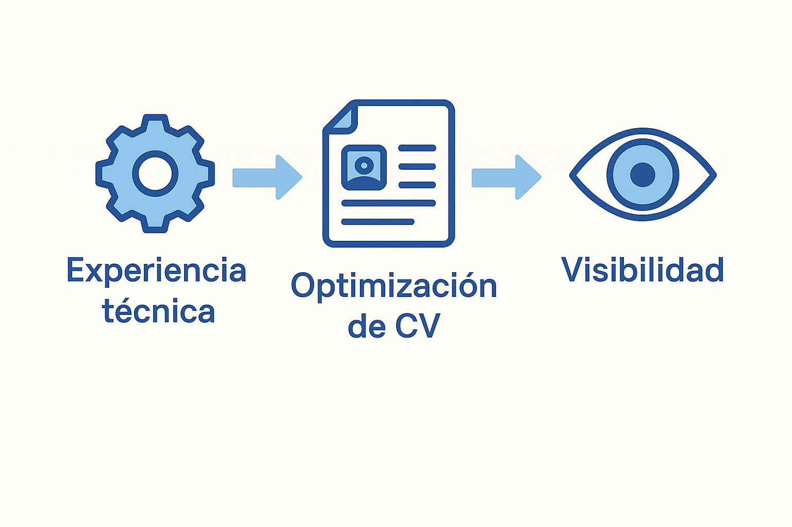

Por qué muchos perfiles backend no tienen presencia técnica visible
Backend · experiencia · empleabilidad técnica
Es común encontrar desarrolladores backend con muchos años de experiencia, capaces de analizar problemas complejos y mantener sistemas críticos, pero con muy poca —o ninguna— presencia técnica visible hacia el exterior.
Repositorios públicos, proyectos documentados o incluso una explicación clara de cómo trabajan suelen estar ausentes, y esto hoy tiene un impacto directo en la forma en que somos evaluados profesionalmente.
Durante muchos años no fue necesario “mostrarse”. Bastaba con hacer bien el trabajo dentro de una organización. El código vivía en repositorios privados y la experiencia se validaba internamente.
Muchos perfiles backend —me incluyo— construimos nuestra carrera en ese contexto. Resolver problemas y mantener sistemas estables era más importante que explicar cómo lo hacíamos.
El choque con los procesos actuales
Procesos automatizados, filtros por palabras clave y evaluaciones rápidas hacen que la experiencia real muchas veces quede oculta detrás de un CV poco expresivo o desactualizado.

Para perfiles con más años de trayectoria, este escenario puede ser especialmente frustrante. Muchas veces el resultado es quedar encasillado en tecnologías legacy, no por falta de capacidad, sino por cómo se presenta el perfil profesional.
La presencia técnica no es marketing
Tener presencia técnica visible no significa volverse influencer ni mostrar código perfecto, sino poder explicar cómo se piensa, qué problemas se han resuelto y con qué criterios se trabaja.
Un repositorio simple, un proyecto personal o una página técnica básica pueden decir mucho más que una lista de tecnologías en un CV.
Reflexión final
Muchos perfiles backend no carecen de experiencia, sino de espacios donde esa experiencia pueda verse y entenderse. Construir presencia técnica es un proceso gradual, compatible con una mentalidad analítica y honesta.
Este tema conecta con la iniciativa que estoy explorando sobre optimización de CV para perfiles técnicos, enfocada en traducir experiencia real de forma clara y práctica.